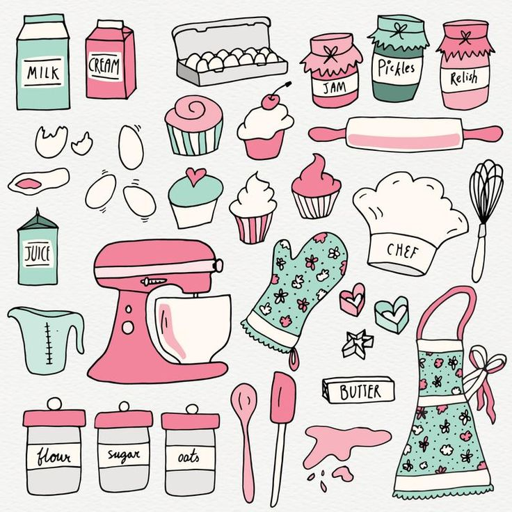

Introduction
I'm obsessed with baking. Just a little. Some of my earliest memories involve helping my sister in the kitchen. Sometimes our creations turned out well, we made cookies, cupcakes, even Boston cream pie. Sometimes we weren't so successful, just ask anyone in our family about the chocolate souffle, or the chocolate scrambled eggs as that infamous dessert became known..
The art of baking goes back many, many centuries and is one of the oldest cooking methods known to humans. Fast forward a few thousand years, to our DVRs and Netflix queues filled with episodes of new and exciting baking competitions. What makes this specific method of cooking just so special to billions of bakers around the world? Well, here are three reasons why baking is a great hobby.
Reason #1: Baking is Relaxing

Baking can be relaxing when you really get into the motions of the process. Chopping, whisking, mixing, and sifting are simple, integral movements to baking that become comfortable and cathartic. Plus, it gets your mind off whatever may be bothering you and allows you to work out your frustrations – try punching a lump of dough a few times to release some pent-up stress! Of course, there’s nothing to cheer up a mood quite like the smile on a friend’s face when they see you’ve baked something for them!
Let’s not forget how scent is the sense most closely related to emotion. Certain smells and flavors in the kitchen can evoke memories of moments locked deep inside your memory. So next time you think of a leisurely break or find yourself bored, look up some baking tips for beginners and allow yourself to get into baking and experimenting in the kitchen. It can be a genuinely relaxing hobby if you take the time to learn.

Reason #2: Baking Increases Creativity
Baking is a simple creative process at first. Combine a few ingredients together, and—VOILA—a dish is created. However, as you become more advanced with baking, you’ll get to be more innovative with your bakes. You will start thinking of different ways to make your creations more aesthetically appealing. Baking pushes you to try out different combinations of ingredients to enhance the flavor of your pies, tarts, and cakes, or different styles of sculpting and weaving to achieve different lattice-patterned pies.
Let’s not forget that, sometimes, baking makes you think on your feet to overcome obstacles like a small budget, inconvenient baking conditions, missing tools, or limited ingredients. Baking truly gets your creative juices running.

Reason #3: Baking Can Be A Rather Inexpensive Hobby
Unlike some hobbies, you can definitely bake on a budget. You don’t need to buy expensive, fancy gadgets or shop for extravagant, rare ingredients. In fact, most of the time, baking uses common, handy equipment that usually already resides in kitchen drawers.
With items such as measuring cups, wooden spoons, a whisk, baking pans, and just a little bit of arm strength and determination, you can bake close to anything. A combination of these is just enough for the simplest baking projects. Plus, in most cases, you can use generic baking ingredients like flour, leaveners, sugar, salt, flavorings, dairy, and spices.